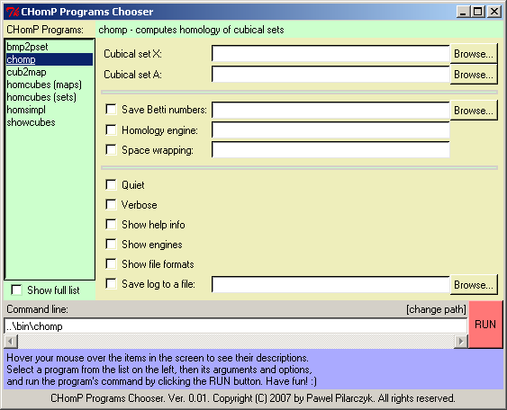

Description. The CHomP Software Chooser is a cute GUI Python script which contains detailed information on the command line of each program and helps configure each program in an interactive way.
System requirements. A Python interpreter (with Tkinter) is necessary to run this program. It is preinstalled on most Unix/Linux systems and in MacOS; in some cases, however, it might be necessary to install some additional packages - see your system's manual for details. For MS Windows users, a freely downloadable distribution known as Active Python is recommended.
Directions. To make the best use of the script, open a terminal window (or command prompt) and run the script with the command python chooser.py. Hover your mouse pointer over various areas in the script window, and reed the descriptions that appear at the bottom of the screen. Select a program from the list on the left, and its command-line arguments will be displayed as a form to the right of the programs' list. While filling in the form, the program's command line is automatically updated in a window below. Click the RUN button to run the program with the selected arguments. The output of the program is displayed in the terminal window from which the script was started. Hit the ESC key or close the window to exit the program.
Location. The CHomP Software Chooser Python script is located in the python subdirectory of the source code package. The name of the script is chooser.py.
Sample screenshot. This is a screenshot which illustrates what the CHomP Software Chooser looks like (in your operating system it may look slightly different). You are welcome to run the program yourself to explore all its featuers.
